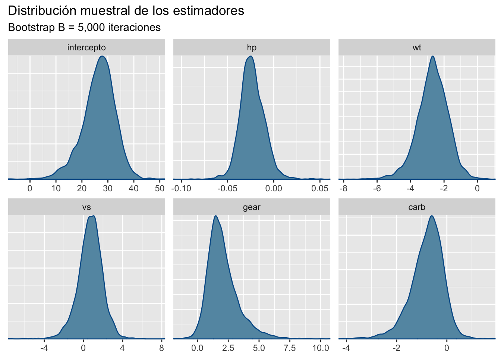

Code
library(caret)
library(GGally)
library(ggplot2)
library(flextable)
library(bayesplot)
library(ggfortify)Este post presenta un análisis la base mtcars usando un modelo lineal múltiple con verosimilitud Gaussiana.
La base de datos mtcars contiene el registro de motores de carros mas populares en USA, 1974. los datos contienen 32 registros, con 10 atributos del motor.
library(caret)
library(GGally)
library(ggplot2)
library(flextable)
library(bayesplot)
library(ggfortify)Se desea predecir la capacidad de consumo de los motores, para eso se evaluaron las siguiente variables.
mpg: Millas por Galón. (Dependiente)
hp: Caballos de fuerza.
carb: número de carburadores.
wt: peso del motor.
gears: Número de cambios.
vs: tipo de motor, recto:1 o tipo V:0.
Para medir la relación de consumo de los motores utilizaremos un GLM normal tal que:
mpg_i \sim N(\mu_i,\sigma^2), \quad g(\mu_i) = \mu_i, \text{ y } \mu_i = \beta X_i.
El siguiente código limpia la base de datos para obtener las variables de interés
df = mtcars[,c(1,4,6,8,10,11)]
str(df)'data.frame': 32 obs. of 6 variables:
$ mpg : num 21 21 22.8 21.4 18.7 18.1 14.3 24.4 22.8 19.2 ...
$ hp : num 110 110 93 110 175 105 245 62 95 123 ...
$ wt : num 2.62 2.88 2.32 3.21 3.44 ...
$ vs : num 0 0 1 1 0 1 0 1 1 1 ...
$ gear: num 4 4 4 3 3 3 3 4 4 4 ...
$ carb: num 4 4 1 1 2 1 4 2 2 4 ...Todas las variables son numéricas, pero algunas son totalmente enteras, dificultando el proceso de análisis, se procede a revisar las correlaciones para revisar las interacciones lineales entre variables.
ggpairs(df)Figure 1 muestra colinealidad entre las variables mpg, hp y wt. Por lo tanto, múltiples modelos deben ser considerados. Realizemos un modelo inicial, el considerado el modelo completo que posee todas las variables
Dos covariables X_1 y X_2 se dicen ser colineales si las variables son linealmente dependientes.
Recordar que si dos columnas de una matriz son linealmente dependiente, entonces el determinante es cero.
Ajustamos el modelo completo que consiste en usar todas las variables, y revisamos el ajuste e inferencia de los parámetros.
m1 = lm(mpg~.,data = df)
summary(m1)
Call:
lm(formula = mpg ~ ., data = df)
Residuals:
Min 1Q Median 3Q Max
-3.2884 -1.4370 -0.3155 1.1697 5.8246
Coefficients:
Estimate Std. Error t value Pr(>|t|)
(Intercept) 27.20311 5.74212 4.737 6.72e-05 ***
hp -0.02339 0.01353 -1.728 0.0958 .
wt -2.74663 0.92005 -2.985 0.0061 **
vs 0.94692 1.36929 0.692 0.4954
gear 1.78520 1.12762 1.583 0.1255
carb -0.65498 0.57767 -1.134 0.2672
---
Signif. codes: 0 '***' 0.001 '**' 0.01 '*' 0.05 '.' 0.1 ' ' 1
Residual standard error: 2.569 on 26 degrees of freedom
Multiple R-squared: 0.8477, Adjusted R-squared: 0.8184
F-statistic: 28.94 on 5 and 26 DF, p-value: 7.653e-10Debido a la alta colinealidad entre las variables, pocos parámetros estimados son significativos. Procedemos a eliminar algunas variables del modelo. Eliminamos la variable wt al ser colineal con múltiples variables. Por lo tanto, el modelo inicial M_1 es:
m1 = lm(mpg~vs+hp+gear+carb,data = df)
summary(m1)
Call:
lm(formula = mpg ~ vs + hp + gear + carb, data = df)
Residuals:
Min 1Q Median 3Q Max
-3.8047 -2.3487 -0.0967 1.9188 6.7859
Coefficients:
Estimate Std. Error t value Pr(>|t|)
(Intercept) 13.03756 3.67694 3.546 0.00145 **
vs 0.84671 1.55657 0.544 0.59093
hp -0.03449 0.01480 -2.331 0.02747 *
gear 4.20129 0.89285 4.705 6.72e-05 ***
carb -1.33338 0.60391 -2.208 0.03593 *
---
Signif. codes: 0 '***' 0.001 '**' 0.01 '*' 0.05 '.' 0.1 ' ' 1
Residual standard error: 2.921 on 27 degrees of freedom
Multiple R-squared: 0.7955, Adjusted R-squared: 0.7652
F-statistic: 26.25 on 4 and 27 DF, p-value: 5.825e-09Pese que la función lm de R realiza un análisis de incertidumbre al presentar una Prueba-t de significacia para cada parámetro \beta_i, no presenta los intervalos de confianza. Estos serán estimados con Bootstrap. La siguiente función obtiene una muestra Bootstrap de los parámetros desconocidos \beta.
lm_boots = function(y,x,B = 1000){
n = length(y)
est = NULL
for (i in 1:B) {
si = sample(x = 1:n,size = n,replace = TRUE)
mli = lm(y[si]~x[si,] )
ci = as.array(mli$coefficients)
est = rbind(est,ci)
}
# Estética
cn = colnames(x)
colnames(est) = c("intercepto",cn)
return(est)
}Obtenemos una muestra Bootstrap para los estimadores \hat \beta de tamaño B=5,000 repeticiones
btp = lm_boots(y = df$mpg,x = as.matrix(df[,-1]),B = 5000)
bayesplot_theme_set(theme_grey())
mcmc_dens(btp)+labs(title="Distribución muestral de los estimadores",
subtitle ="Bootstrap B = 5,000 iteraciones")
Los intervalos de confianza al 95% son:
x = apply(btp,MARGIN = 2, FUN = quantile, probs = c(0.025,0.5,0.975))
# Estética
x = data.frame( t(x) )
x$pars = c("intercepto","hp","wt","vs","gear","carb")
colnames(x) = c("q2.5%","Median","q97.5%","parámetros")
ft = flextable(x[c(4,1,2,3)])
autofit(ft)parámetros | q2.5% | Median | q97.5% |
intercepto | 13.04336742 | 27.06974843 | 37.837299379 |
hp | -0.04732486 | -0.02396578 | 0.002413294 |
wt | -4.61440854 | -2.64810785 | -0.975654924 |
vs | -2.04117204 | 0.76777717 | 3.167562241 |
gear | 0.20619304 | 1.82768695 | 5.141965668 |
carb | -2.25435361 | -0.71044672 | 0.292475032 |
Los intervalos de confianza revelan mayor información a lo obtenido por la prueba-t, parámetros como hp, y carb que son significativos en la prueba, no lo son mediante los intervalos. Esto indica la posibilidad de un modelo mucho mas reducido.
Una vez evaluadas las estimaciones del modelo, es necesario revisar los residuos del mismo para corroborar supuestos, la siguiente linea de código presenta un resumen descriptivo de los residuos del modelo inicial M_1, en su mayoría parecen estar centrados en cero.
summary(m1$residuals) Min. 1st Qu. Median Mean 3rd Qu. Max.
-3.80470 -2.34875 -0.09674 0.00000 1.91880 6.78592 Figure 3 presenta una visualización típica para el diagnostico de los residuos, ninguna figura debe presentar un comportamiento polinómico a excepción del gráfico de quantiles (derecha superior), que debe seguir el comportamiento de una función lineal creciente.
autoplot(m1)
Adicional al modelo M_1, ajustamos dos modelos mas:
M_2: \quad mpg \sim N(hp+gear+carb,\sigma^2), M_3: \quad mpg \sim N(wt+gear+carb,\sigma^2).
m2 = lm(mpg~hp+gear+carb,data = df)
m3 = lm(mpg~wt+gear+carb,data = df)El siguiente código calcula el RMSE de un modelo linea en el conjunto de entrenamiento.
rmse = function(m){
mse = sum(m$residuals^2)/length(m$residuals)
return(sqrt(mse))
}x = matrix(0,nrow = 4,ncol = 3)
x[1,] = c(logLik(m1),logLik(m2),logLik(m3))
x[2,] = c(AIC(m1),AIC(m2),AIC(m3))
x[3,] = c(BIC(m1),BIC(m2),BIC(m3))
x[4,] = c(rmse(m1),rmse(m2),rmse(m3))
# Estética
x = data.frame(x)
x$pars = c("logLik","AIC","BIC","RMSE")
colnames(x) = c("Modelo 1","Modelo 2","Modelo 3","Criterio")
ft = flextable(x[c(4,1,2,3)])
autofit(ft)Criterio | Modelo 1 | Modelo 2 | Modelo 3 |
logLik | -76.986353 | -77.160742 | -75.196419 |
AIC | 165.972706 | 164.321484 | 160.392838 |
BIC | 174.767122 | 171.650163 | 167.721517 |
RMSE | 2.682864 | 2.697525 | 2.536917 |
Table 2 muestra la tabla de criterios de información para el conjunto de datos mtcars para sorpresa del lector el mejor modelo es el alternativo M_3 que usa la variable colineal wt en vez de hp.
El siguiente código presenta una función para realizar k-fold-CV para cualquier valor de k. En caso de querer añadir otros modelos o criterios, la función deberá ser modificada.
kfold = function(df,k){
# Generar la particion
kfld = createFolds(df[,1],k = k)
mat = NULL
for (i in 1:k) {
# separar los datos en conjuntos de prueba y entrenamiento
dfE= df[-kfld[[i]],]
dfP = df[kfld[[i]],]
# Ajustar los modelos
m1 = lm(mpg~vs+hp+gear+carb,data = dfE)
m2 = lm(mpg~hp+gear+carb,data = dfE)
m3 = lm(mpg~wt+gear+carb,data = dfE)
p1 = predict(m1,dfP)
p2 = predict(m2,dfP)
p3 = predict(m3,dfP)
# Calcular AIC y RMSE
aic = c(
AIC(m1),
AIC(m2),
AIC(m3)
)
rmse = c(
RMSE(pred = p1,obs = dfP[,1]),
RMSE(pred = p2,obs = dfP[,1]),
RMSE(pred = p3,obs = dfP[,1])
)
mae = c(
MAE(pred = p1,obs = dfP[,1]),
MAE(pred = p2,obs = dfP[,1]),
MAE(pred = p3,obs = dfP[,1])
)
mape = c(
mean(abs((p1-dfP[,1])/dfP[,1])),
mean(abs((p2-dfP[,1])/dfP[,1])),
mean(abs((p3-dfP[,1])/dfP[,1]))
)
# Unir los datos
mat = rbind(mat,c(aic,rmse,mae,mape))
}
colnames(mat) = c("AIC1","AIC2","AIC3","RMSE1","RMSE2","RMSE3","MAE1","MAE2",
"MAE3","MAPE1","MAPE2","MAPE3")
row.names(mat) = NULL
return(mat)
}Table 3 presenta los resultados obtenidos al realizar 5-fold-cv, bajo todos los criterios presentados, el modelo M_3 presenta las mejores predicciones. Por lo tanto, M_3 es el modelo con Mayor aprendizaje.
rst = kfold(df = df,k = 5)
x = t(apply(rst,MARGIN = 2,FUN = "quantile",probs = c(0.025,0.5,0.975)))
# Estética
x = data.frame(x)
x$pars = c("AIC1","AIC2","AIC3","RMSE1","RMSE2","RMSE3","MAE1","MAE2",
"MAE3","MAPE1","MAPE2","MAPE3")
colnames(x) = c("q2.5%","Median","q97.5%","Criterio")
ft = flextable(x[c(4,1,2,3)])
autofit(ft)Criterio | q2.5% | Median | q97.5% |
AIC1 | 121.27452574 | 135.8144340 | 141.1333914 |
AIC2 | 119.69800911 | 134.7774906 | 139.4652709 |
AIC3 | 115.27129156 | 133.2425912 | 136.3239395 |
RMSE1 | 1.52853566 | 3.1093922 | 4.7664596 |
RMSE2 | 1.52972881 | 3.0961416 | 4.5683149 |
RMSE3 | 1.44906967 | 3.3199184 | 4.1000376 |
MAE1 | 1.16709597 | 2.7387763 | 4.1490150 |
MAE2 | 1.18860368 | 2.7419087 | 3.9740156 |
MAE3 | 1.19691817 | 2.5395776 | 3.3251070 |
MAPE1 | 0.05817871 | 0.1406458 | 0.2110424 |
MAPE2 | 0.05843740 | 0.1418891 | 0.2016244 |
MAPE3 | 0.06304639 | 0.1130459 | 0.1766864 |